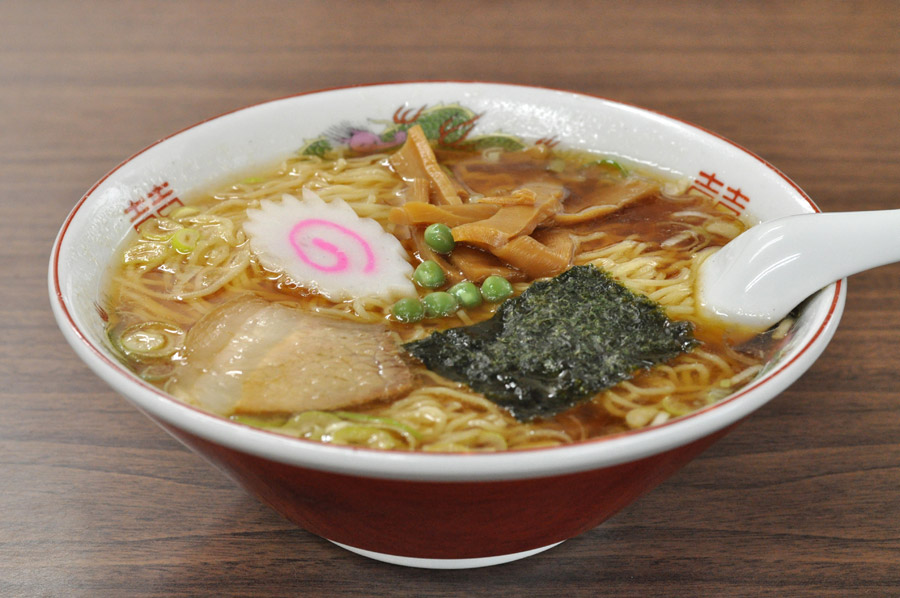

札幌ラーメン

札幌のラーメンは味噌ベースで、濃厚なスープが特徴です。
ラーメンの世界へようこそ！ここでは日本各地の美味しいラーメンをご紹介します。

札幌のラーメンは味噌ベースで、濃厚なスープが特徴です。

博多のラーメンは豚骨ベースで、クリーミーなスープが特徴です。

自宅で作れる簡単な味噌ラーメンのレシピをご紹介します。

本格的な豚骨ラーメンを自宅で作ってみましょう。

ラーメンに使われる様々な味噌をご紹介します。
ラーメンに欠かせない醤油の種類と使い方をご紹介します。
ラーメンに関するお問い合わせはこちらからどうぞ。